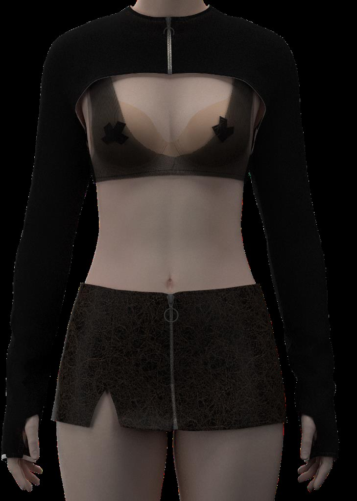
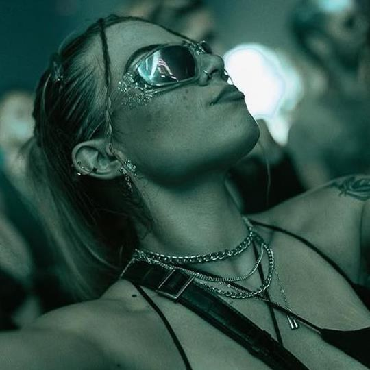
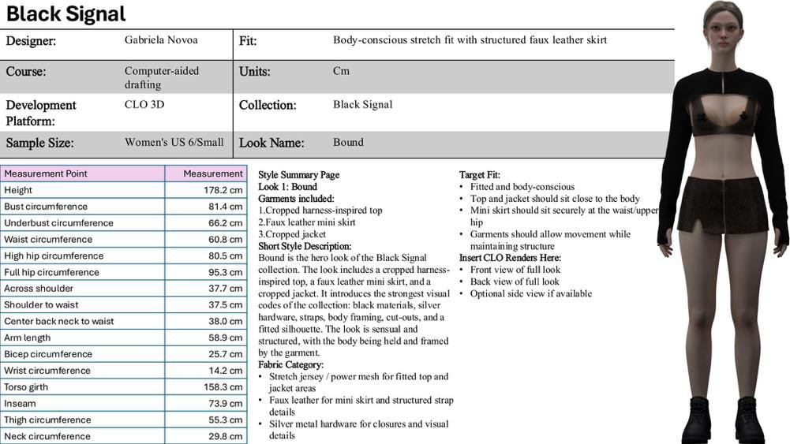
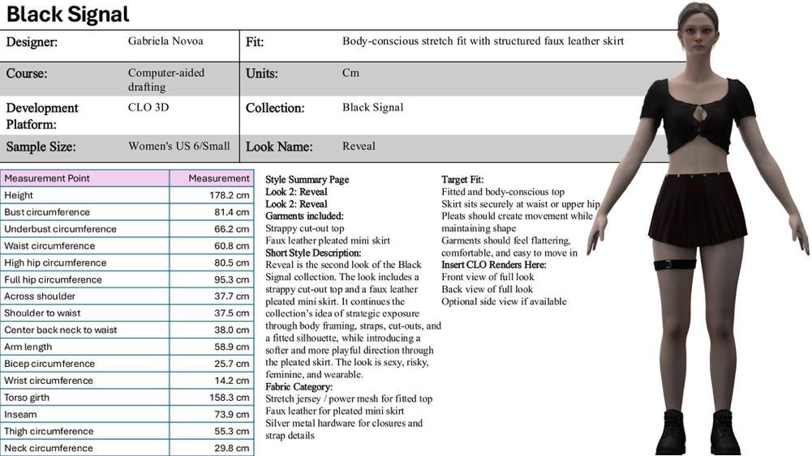
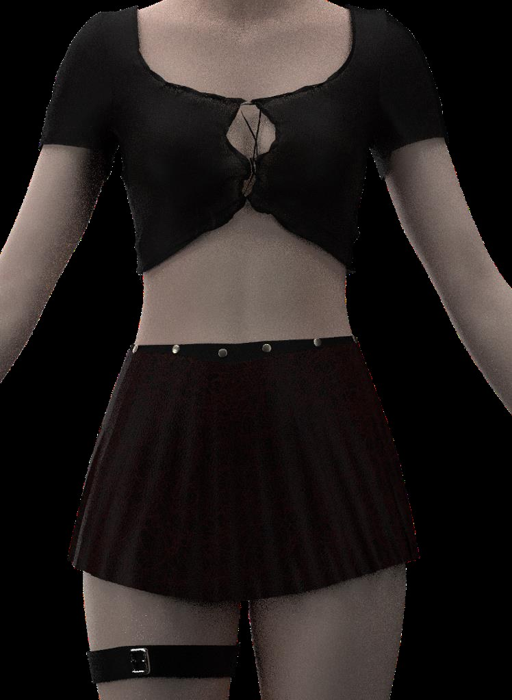

Black Signal
Digital Fashion & Collection Development
A study of freedom, confidence and strategic exposure.

OVERVIEW
The idea.
Black Signal is a womenswear capsule concept inspired by Berlin techno culture and the freedom of self-expression I experienced in its nightlife. What began as an interest in rave clothing evolved into an exploration of confidence, body framing and the ability to dress without fear of judgement. The collection reinterprets influences from fetishwear and underground fashion through black materials, mesh, faux leather, straps, cut-outs and silver hardware. Its guiding principle is strategic exposure: revealing details should feel intentional, sensual, flattering and wearable rather than simply provocative. The target customer is a woman aged approximately 22–35 who values individuality and may wear the pieces to music events or integrate them into everyday styling. Black Signal is conceived for the premium contemporary market.
A closer look.




PROCESS
From research
to realization.
I began with memories of Berlin and researched the visual language of techno nightlife, alternative dressing and fetishwear references. I was interested in the atmosphere of freedom and confidence, not simply the shock value of revealing clothing. A concept collage helped establish the collection's identity, while the target-market profile clarified the intended customer's interests, lifestyle and relationship with self-expression. I chose an all-black palette and silver hardware so that texture, body framing and cut-outs would become the principal design features. Mesh and performance jersey were considered for transparency and movement; faux leather added structure. Because the garments were intended for nightlife and dancing, comfort and flexibility mattered alongside appearance. I planned four related looks: Bound, Reveal, Rhythm and Veil. Bound emphasizes harness-like structure; Reveal brings softness through a pleated skirt; Rhythm considers movement; and Veil explores transparency. CLO 3D became a way to test the translation from concept to garment. The two completed digital looks presented here are Bound and Reveal; remaining ideas are documented as proposals rather than completed renders.
REFLECTION
What I learned.
Black Signal allowed me to explore an aesthetic that differs from my usual personal style while questioning the relationship between clothing and confidence. The most important design challenge was balancing sensuality, coverage and wearability, particularly when using mesh, straps and cut-outs. I wanted the body to feel framed rather than simply exposed. Developing the target customer made me think about how a bold concept could work beyond the specific nightlife culture that inspired it. CLO development also revealed the challenges of turning an idea into a garment that follows the body and allows movement. Reveal feels closest to my own aesthetic because it combines a daring direction with softness and practicality. The project encouraged me to experiment beyond familiar creative boundaries.